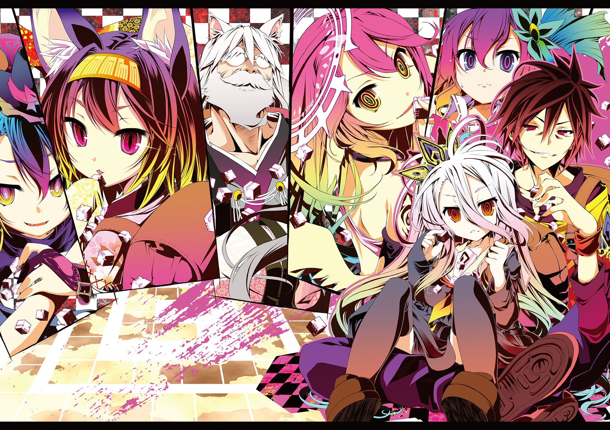

ノーゲーム・ノーライフ
あらすじ
『 』（くうはく）――それはあらゆるゲームで連勝を重ね、チート、アシストツールなど
どんな手段を使っても勝てないとされる天才ゲーマーの名前であった。あらゆるゲームで無敗の
記録を持つことから一部では都市伝説とされている。その『 』の正体である空と白はある日、
「生まれてくる世界を間違えたと感じたことはないか」と書かれたメールを受け取る。
世界を「クソゲー」と呼ぶ『 』の答えを聞いたメールの送り主・テトは『 』を自分の世界へ
召喚した。そこは知性ありしモノと主張する【十六種族】と世界の絶対法則【十の盟約】の下に、
『 』が夢見ていた、この世の全てが単純なゲームで決まる世界――盤上の輪廻 （ディスボード）だった。
